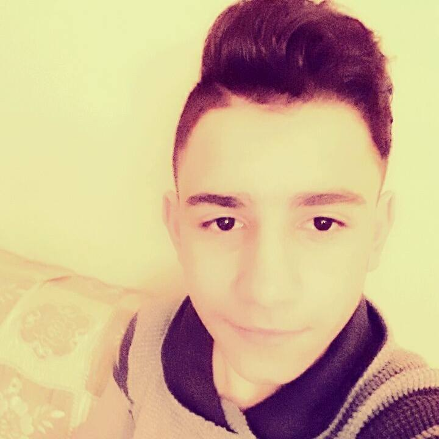

- (+374)-077-737-163
- (+374)-010-737-163
About Me
Name` Shaliko
Last Name` Yeghiazaryan
Date` 26/02/03
I was born on 26/02/03, in small country Shirakamut(Nalband).When I was 6 months, I and my family left our country and went to Russia.I have lived there 5years.Then I returned to Armenia and I began my life in Yerevan.I am living in Yerevan untill today.I love WEB Programming too much, and I want to know more about it.I love playing football,computer games and play the Guitar.From School's subjects I prefer Maths, Geography and Physics.
Education
Schools`2009-2016(January) Monte Melkonyan N11 school,2016(February)-Now Avedisian School
Tumo` 08/09/15 Yerevan` Halabyan street 16